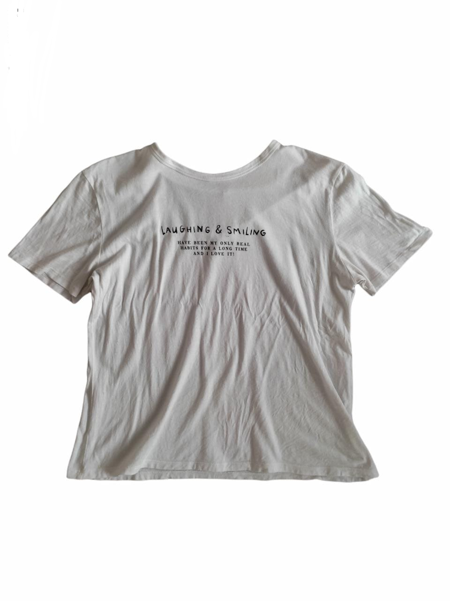
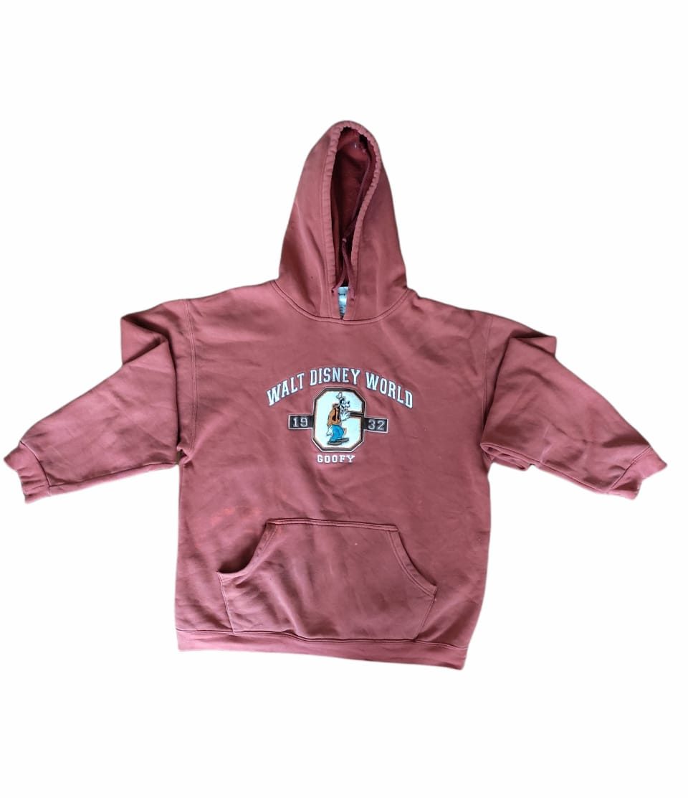
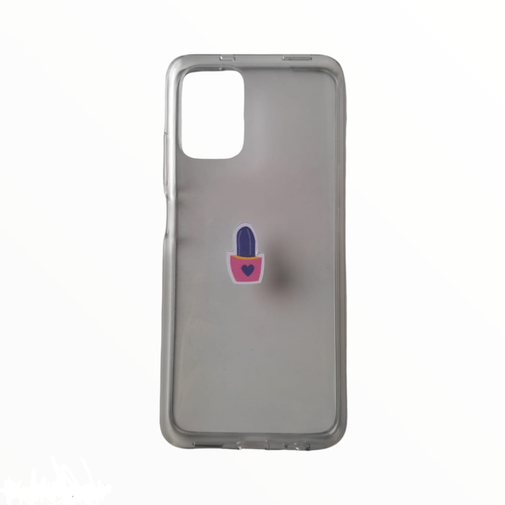
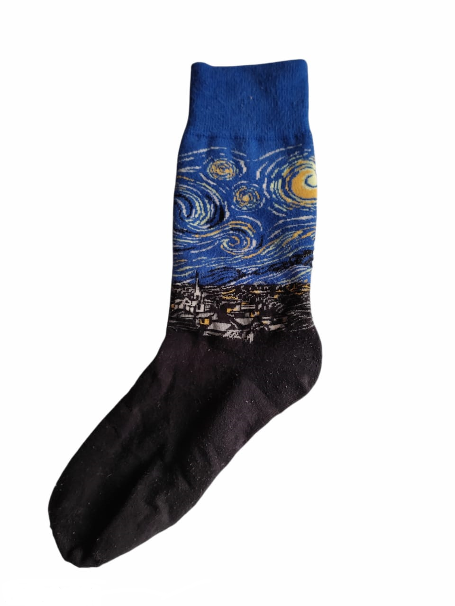
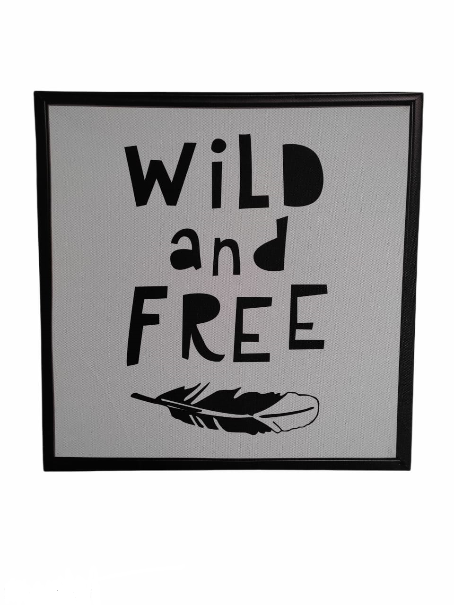

Biografía

Me llamo Andrea Sulbaran, tengo 24 años y soy comunicadora social graduada de la Universidad de La Sabana. Tengo una gran pasion por el diseño minimalista que yo misma he desarrollado, que quiero compartir a traves de prendas y objetos de uso diario, para que puedas mostrar una forma mas artistica de ti mismo
Todos los diseños son hechos por mi, nacen de mi inspiración diaria que puedes conseguir en "Mi Pinterest"También, puedes contactarme como tanto para utilizar un diseño hecho por ti o si deseas que realice uno para ti
Las camisas son hechas 100% de algodón, disponemos de 5 tallas las cuales son XS, S, M, L y XL. El estampado es hecho por técnica de sublimación con tintes especiales
Los buzos son hechos 100% de algodón, disponemos de 3 tallas las cuales son S,M y L. El estampado es hecho por técnica de sublimación con tintes especiales
Los forros son hechos de silicona y estampadas con papel de sublimación. Por el momento solo disponemos para celulares marca Apple, del Iphone 7 en adelante
Las medias son %100 de algodón y mandadas a hacer con el modelo que escojas. Contamos con las tallas de 6 a 12
Los cuadros son un lienzo donde se estampa el diseño que esta en un papel de sublimación. De este disponemos 3 tamaños: pequeño, mediano y grande
